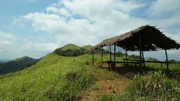

1 Bekal Fort

Around 16 km to the south of northernmost district in Kerala, Kasaragod, lies the massive Bekal Fort. It is among the biggest forts in Kerala and has been impeccably maintained throughout the years. It rises to 130 feet above sea level and is situated on a headland spanning 35km. Much effort has been put to develop a beautiful beach here called the Bekal Fort Beach. People flock to these spots in great numbers. Situated comfortably on steep hills by the sea, the fort provides for an imposing view from the beach. Built using laterite slabs and with a polygonal shape, it is amongst the most visited sites in Kerala.
There are many factors that have added to the popularity of the site. An observation tower fitted with beautiful peepholes, the Anjaneya Temple with its famous masonry and two Theyyam sculptures built from laterite are among the primary attractions. An ancient mosque built by Tipu Sultan and various underground passageways are also important places in the area. A rock garden was built using laterite in the parking area and is an architectural marvel in itself. Trees have been planted on the beach along with the construction of a splendid walkway which makes it easier to traverse the beach and enjoy its sights. At night, the entire place is lit up with special lights that add a whole new dimension to its beauty.
2 Ranipuram
The gentle hills of Ranipuram in Kerala are famous for its trekking trail. Situated at the height of about 750 meters above sea level, this destination has thick forest vegetation and lush green grasslands. The whole place is proposed inside the Ranipuram Wildlife Sanctuary which merges with Talakaveri Wildlife Sanctuary of Karnataka. The sublime beauty of this region is comparable to that of Ooty, and is a must-visit for all nature enthusiasts. The innocent life of the village and gentle nature make a perfect blend of delight and enjoyment. The entire trek route of Ranipuram is very scenic and a delight for nature photographers. The trek lasts for about two and a half kilometres, and the summit has a cave, and reaching it is quite an adventurous experience.
Ranipuram has a wide assortment of flourishing flora and fauna. Ranging from lush green vegetation to multiple varieties of wildlife, this place is the perfect destination to discover the biodiversity of the region. From mighty elephants to delicate butterflies, Ranipuram seems like a real life manifestation of Mowgli's adventures. This destination is also the favorite haunt of many species of birds and will surely awaken the ornithologist in you! If you are planning a trip to Ranipuram, it is advisable that you choose winters (October - March) for the same. Travelling here during monsoons is not safe as it is subjected to heavy rains. Hence, visiting Ranipuram as soon as the shower ends is ideally the best time.
3 Malik deenar Masjid

Built around AD 642 by Malik Deenar, one of the first known Muslims to have come to India in order to propagate Islam in South Asia. This is the most sacred place for muslims in the region and offers Jumah prayer too. the place is famous for its ancient structure (old portion of the mosque,at the centre) and the breathtaking views of the Arabian Sea in the back. The mosque contains the grave of Malik Deenar and rituals such as the Ziyarath (visiting of tomb) are folowed by the followers.
Considered to be one of the most well kept and an attractive mosque of Kasargod District, Malik Deenar Mosque is believed to be constructed by Malik Ibn Dibar. The grave of one of a descendant of Malik Ibn Dibar namely Malik Ibn Mohammed is located in the mosque. Juma Masjid situated in Thalangara is one of the most beautiful mosque in the district while there is another mosque namely Theruvath Mosque in the middle of Kasargod.